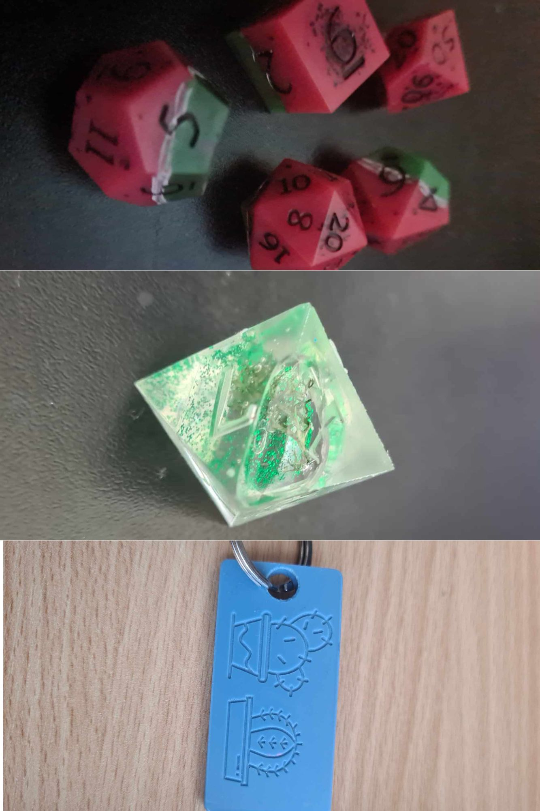
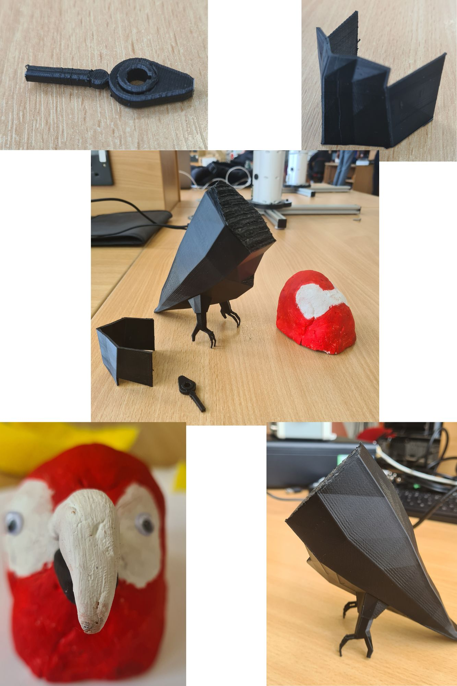

Development of articulated parrot from start to finish

This page will cover the artefact's design, development and final production.
Design
This project aimed to develop a 3D articulated model of a parrot.
This model consists of 5 separate pieces that would be constructed together to create the final piece.
The 5 pieces are the Head, the chest plate, the lower body, the concentric cam, and perch. The intended idea was to create each of these in either Blender or Fusion360.
For the articulation, the concentric cam would be connected to the chest plate to push it outwards and would make it look as if the bird was breathing.
Available technologies
There were 7 types of technology available to create this project.
Motion capture
Motion capture is a technique used to record the movement of people and objects. This involves tracking the actor or object's movement and then using this data to generate this movement in a computer-generated environment.
For this technology to work actors must wear special suits and be covered with markers. These markers will reflect the light emitted by cameras placed around the capture area.
A few common uses for motion capture are Video games, Virtual reality, and TV & film.
This technology was unsuitable for designing the parrot model as it was not possible to bring in a live parrot to capture its movement.
CAD and 3D modelling
For this project two options were available, Blender and Fusion360.
Both these softwares allow the user to create digital representations of objects or surfaces.
However, Fusion360 is primarily used for tasks that are more geared towards engineering e.g. creating gears, while Blender is more focused on animation and rendering scenes.
For this project, both of these softwares were used for 3D modelling of the parrot.Fusion360 was used to model the concentric cam, and Blender was used to model the other parts of the body.
This choice was made as Fusion is good for engineering projects and the cam consists of moving objects so it was perfect for this task. While Blender is better for the creation of the other parts as it is animation-geared, so it was good for the aesthetic side.
The stl above shows the initial Blender design of the parrot which was designed by another member of the development team due to their prior knowledge of the software.
The stl above shows the initial perch design which was created using Blender.
The stl above shows the concentric cam which was created in Fusion360 by another member of the development team due to their confidence in using the software.
3D scanning
3D scanning is used to capture the shape and appearance of a real-world object and convert it into a digital model.
The scanner available for this project was a laser scanner which uses laser beams to measure the distance to the surface of an object. This allows them to capture detailed geometric information allowing them to be used on complex shapes.
3D scanning has a lot of uses such as quality control and reverse engineering.
This technology was not employed for the project as a real parrot would not be possible to scan and purchasing a model parrot would not be an optimal use of the artefacts budget, as it can be easily created using other methods for a lower cost.
3D printing
3D printing is a manufacturing process that creates a physical object out of a digital design. It works by layering thin layers of material which is in the form of liquid or powdered plastic or metal, and fusing the layers.
For this project there was a range of filaments that could be used to print the artefact.
The filament types available were PLA, ABS, Resin, Nylon and Carbon fibre.
The types actively considered for this project were PLA, ABS and Resin. However, PLA and Resin were the final choices for printing materials.
PLA and ABS are very similar in terms of uses and weight, however, PLA is cheaper to print and was therefore chosen.
Resin was selected to print the concentric cam as Resin is good for smaller, detailed prints, and as the cam is small this is the perfect filament choice.
PLA was selected to print the majority of the artefact as it is cheap and lightweight. One downside to PLA is it cannot have a lot of sun exposure as it will become brittle, but this project is designed for indoor use so this is not much of an issue.
Resin and silicon
The image shows the two different types of resin that are available. The left and middle images show polyurethane (poly) resin and the right image shows epoxy resin
The two types of resin differ massively as polyurethane can be de-moulded within 20 minutes of being poured, while epoxy requires a setting time of 48 hours. Both types can be dyed with different colour pigments, however poly will set white and epoxy will set clear. As well as this they have completely different working times with epoxy having a 10-minute work time while poly only has 2 minutes. One issue with epoxy resin is that it is prone to getting trapped air bubbles as seen in the image above. This can be mitigated by putting the poured resin into a pressure pot, however, there is still a risk of a pressure drop that will stop the air bubbles from being able to escape. If this happens then the resin will have to be repoured into the mould and tried again. Silicon rubber was also available to use for this project. The silicon available for this project can be used as a fake skin covering or can be used to create moulds. This silicon takes around 24 hours to fully cure, and may require a vacuum chamber to degas the silicon to remove any air bubbles. For this project, both silicon and resin were considered. The initial design was to create the face plate of the bird out of resin by creating a silicon mould of the 3d printing face plate. Once the mould is created epoxy resin would have been used and coloured cream and left to set. However, due to time constraints, this idea was not completed and the face plate was printed in PLA instead.Laser cutting
Laser cutting is a process that uses a laser beam to cut, engrave or etch materials including wood, plastic and metal. Laser cutting is computer controlled giving it a high level of precision with a high accuracy and speed. Laser cutting has been used in industries such as agriculture and automotive manufacturing. It is used in agriculture to produce various types of machinery as it is typically made of flat, complex parts that need joining by welding. It's used in automotive manufacturing for creating different flat vehicle parts. For this project laser cutting was not used as this technology is good for flat materials, while this project relies on a 3D model.
Haptic modelling
Haptic modelling is a technology that allows users to interact with digital models or simulations through touch and force feedback. The technology available for this project was a haptic pen.
The haptic pen provides a tactile sensation which simulates the feeling of pressing against the object through force feedback. As well as this it can provide vibrational feedback which is triggered when specific actions e.g. tapping the object, happen.
This technology is good at providing an enhanced drawing experience with the provided feedback to create a more immersive and natural experience.
Haptic modelling was considered for this project to add detail onto elements such as the perch and the face plate. However, this level of precise detail was not required due to the proposed aesthetic coverings.
Aesthetic covering
For the outer design paint, feathers, sponges and googly eyes were chosen.
The paint colours selected were red, white and black. The red was chosen to paint the whole body so that the base skin colour was a solid red.
White was selected to paint the facial area, as this needed to be a more cream-like colour. Black was used to paint the lower half of the beak which follows the reference images followed by the design team.
Sponges are being used to create the illusion of wings. They would be covered in cardboard and painted red.
Finally, googly eyes are being used instead of manually painting on eyes, this is to speed up the construction process of the artefact.
Final design
The final design of the parrot ended up being quite different to the intended design that was created.
The first change made was using airdry clay for the head instead of printing it in PLA. This was done because there were issues with inverted triangles in the head file meaning it could not be printed off.
To give a head to the parrot the choice was made to substitute a head created out of terracotta airdry clay.
Another change that had to be made to finish the project was to print the body solid rather than hollow to leave space for the concentric cam to be added in. This means that the final product does not have functional articulation as expected.
A slight change was that the files were printed in black filament instead of red which means that there may be extra time needed to paint over it, however, this is not much of an issue due to the feathers being glued onto the model.
The perch was also unable to be printed out in time due to strict time constraints. This is not much of an issue but does affect the overall outcome of the design.
The stl above shows the team's intended 3d model print for the parrot. This body print is primarily hollow, with a hole near the tail for the cam to be controlled from.
The stl above shows the stl that was printed. It can be seen that it is fully solid and none of the holes were able to be kept due to issues with the file when trying to print.
